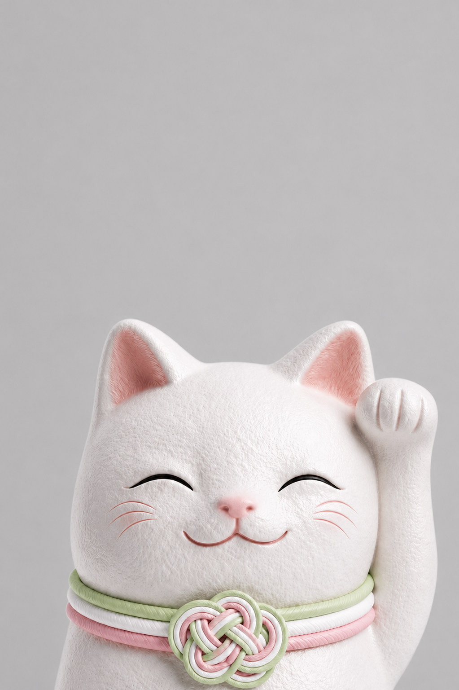

28歳プロデューサー×19歳服飾学生が生んだ招き猫ブランド「NEKOMANEKI」
夢を叶える招き猫「夢猫(ゆめねこ)」2026年8月28日(金)公式サイトオープン
〜在庫リスク0の完全委託販売で、夢猫を安置いただける全国の神社仏閣・お寺様を募集中。公式サイトオープンを記念し、原宿でポップアップイベントも同時開催〜

招き猫ブランド「NEKOMANEKI(ネコマネキ)」をプロデュースするUNPROLOGUE株式会社(本社:東京都渋谷区、代表取締役:梶山悠莉彩)は、2026年8月28日(金)、“夢を叶える招き猫”をコンセプトにした招き猫ブランド「NEKOMANEKI」の公式サイトをオープンしました。縁起物でありながら現代のライフスタイルに自然と馴染むデザインを追求し、伝統と今をつなぐ新しい招き猫として展開します。
公式サイトオープンを記念し、8月28日(金)・29日(土)の2日間、東京・原宿のギャラリースペース「MIL 2ND(ミルセカンド)」(渋谷区神宮前・キャットストリート)にて、プロテインブランド「RINO PROTEIN」とのコラボポップアップイベントを開催。実際に商品をお手に取りいただけます(詳細)。
あわせて、在庫リスク0・完全委託販売方式で夢猫を安置いただける全国の神社仏閣・お寺様の募集も同時に開始します。
公式サイト：https://www.nekomaneki.jp/
商品概要｜夢猫(ゆめねこ)とは
「夢猫」は、記憶に灯った願いを叶うその日まで引き寄せ続ける招き猫です。象徴は梅結びの水引、“叶うまで、ほどけない約束”を意味し、丸みのある柔らかなフォルムと、願いが叶った顔で微笑む表情が特徴。好物は金平糖、居場所は陽だまりの窓辺という、おだやかで一途な性格の一匹です。丸みを帯びたミニマルなシルエットと落ち着いたカラーリングにより、玄関先や神棚はもちろん、リビングやデスクまわりにも自然と馴染みます。
全国の神社仏閣への設置も進めており、地域ごとに水引の色を変えたご当地仕様も展開予定です。
ファーストビジュアルの撮影地について
本商品のメインビジュアルは、世界的庭園デザイナー・石原和幸氏(チェルシーフラワーショー金賞受賞)が故郷・長崎に手掛け、2020年に開園した「三原庭園」で撮影しました。斜面地形を活かし、洋風ガーデン・和風庭園・風景盆栽展示場など複数のエリアに数百種類の花や植物が季節ごとに植え替えられ、“365日進化し続ける庭”として訪れるたびに異なる表情を見せます。夢が叶う日まで願いを引き寄せ続ける「夢猫」の世界観を表現するにふさわしい、唯一無二のロケーションです。
販売方法
NEKOMANEKI公式サイト(https://www.nekomaneki.jp/)が2026年8月28日(金)にオープンしました。あわせて、全国の神社仏閣・お寺様での取り扱いも予定しており、夢猫を安置いただける寺社様を募集しています(詳細は後述の募集案内をご参照ください)。
ショップバッグ ― 持ち歩くだけで広がる「歩く広告」
ご購入時には、夢猫の表情をそのまま大きくデザインしたオリジナルショップバッグをお付けします。ひと目で「NEKOMANEKI」とわかる愛らしい招き猫の顔をバッグ全面にあしらい、街中で思わず二度見してしまうような印象的なビジュアルに仕上げました。
購入者様が街を歩くだけでブランドの世界観が多くの人の目に触れ、ショップバッグ自体が「歩く広告」の役割も果たします。SNSでの投稿・拡散にもつながりやすく、店頭や商品と並ぶブランド体験の一部として位置づけています。
開発の背景
猫アレルギーながら大の猫好きというプロデューサー・梶山悠莉彩。本物の猫に近寄れない彼女が向かったのが、招き猫発祥の地・東京豪徳寺でした。境内を埋め尽くす招き猫、行列をつくる参拝者、夢中でシャッターを切る観光客―想像を超える光景を前に、招き猫という存在が持つ力の大きさに圧倒されました。
一方で、招き猫には「渋い」「昔ながら」というイメージも根強くあります。豪徳寺で目にした熱量を、もっと多くの人が自然に楽しめる形にできないか、そう考えた梶山は、伝統的なシルエットを受け継ぎながら、思わず癒される“キュートアグレッション”を呼び起こすデザインを追求。縁起物としての意味を守りながら現代のライフスタイルに馴染むデザインへと落とし込んで誕生したのが「夢猫」です。
ブランドフィロソフィー
夢を、招く一匹。
記憶に灯った願いを今この手で招き寄せ、叶うその日まで連れていく招き猫―それが「夢猫」の物語です。懐かしさを讃えながらも過去を抱き、今を生き、未来へと進んでいく。その時間の重なりがあなたをかたちづくる。NEKOMANEKIは「MEMORY(記憶)・PRESENT(今)・FUTURE(未来)」という時間の重なりを一匹の招き猫に託し、ものづくりに一貫して込めています。
神社仏閣・お寺の皆さまへ
NEKOMANEKIでは、「夢猫」を全国の神社仏閣・お寺の授与所や境内に安置いただける寺社様を募集しています。仕入れ費用不要、在庫リスク0の完全委託販売方式のため、安心してお取り扱いいただけます。首元の「水引」は「人と人を結ぶ」「願いを結ぶ」という意味を持つ日本の伝統的な飾り紐で、「固く結ばれ、ほどけない」結び方に参拝者様の願いが実を結ぶようにとの祈りを重ねています。色は地域ごとに異なり、その土地の名産や信仰にちなんだ一体を各地の寺社様にお届けします。
神社・お寺様にとってのメリット
- 在庫リスク0の完全委託販売方式（初期費用・仕入れ費用は不要）
- 授与品として新たな収益の柱に
- 参拝者様の滞在・回遊のきっかけに
- SNS映えによる新規参拝者様の増加
- ご祭神・ご利益に合わせた色展開が可能
ご紹介キャンペーンについて
お近くの神社仏閣・お寺様をご存知の方からのご紹介も歓迎しております。
- ご成約時に紹介料をお支払い
- ご紹介いただくだけで、以降の手続きは当方が対応
- 複数の神社仏閣様へのご紹介も歓迎
- 継続的なご紹介の場合、謝礼を都度お支払い
設置にご興味をお持ちの神社仏閣・お寺のご担当者様、ご紹介をご検討いただける方は、hello@unprologue.jp までお気軽にご連絡ください。水引のカラー見本・設置事例・紹介料の詳細をご案内します。
公式SNSアカウント
- RED（小紅書／RedNote）：https://xhslink.cn/m/2KmTJ90YuLu
- Instagram：@nekomaneki_official
- TikTok：@nekomaneki_official
NEKOMANEKIについて
「夢を叶える招き猫」をコンセプトにした招き猫ブランド。28歳の梶山悠莉彩がプロデューサー、19歳の立入天花咲がディレクターを務め、日本文化への深い理解を持つ世代と海外の感性を持つZ世代が手を組み、伝統と現代、国内と海外をまたぐ表現を実現。縁起物としての意味を大切にしながら、現代のライフスタイルに自然と馴染む、新しい招き猫のかたちを提案しています。
梶山悠莉彩（かじやま ゆりあ）｜プロデューサー・28歳
UNPROLOGUE株式会社代表取締役。1998年5月8日、静岡県生まれ。4歳から茶道を続け、着物師範免許を取得。國學院大学で日本文化を学ぶ中で神社仏閣の世界に興味を持つ。渋谷区長賞(政策提言)受賞、ミス國學院2021選出。日本文化への理解とZ世代マーケティングの知見を掛け合わせ、招き猫と神社仏閣を起点にした事業を展開しています。
立入天花咲（たちいり あがさ）｜ディレクター・19歳
LA(ロサンゼルス)出身。上田安子服飾専門学校在学中の19歳。日英バイリンガルとして海外と日本のデザイン文脈を横断しながら、NEKOMANEKIの世界観を国内外に届ける役割を担う。